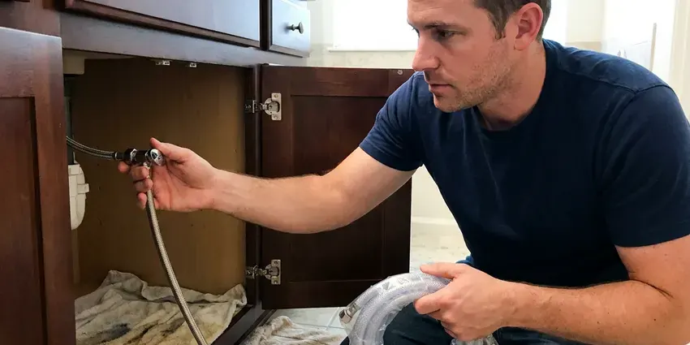

Plumbing Repair in Independence, MO
A drip under the sink or a water heater that quit, FGV Plumbing fixes plumbing in Independence, MO without the runaround. Most repairs are done in one visit.
- Upfront Flat-Rate Pricing
- Camera and Leak Detection
- Repairs That Last
- Flat Price Up Front
Honest pricing and fast repair in Independence, MO.
A small leak costs more every week it runs, so have it checked now.
Plumbing Repair Work in Independence, MO
FGV Plumbing handles plumbing repair throughout Independence, MO, from the nuisance drip to the midnight flood. A running toilet can wait until Tuesday. A split supply line under the sink cannot, so those calls jump to the front of the schedule and usually get a plumber within a few hours.
Some of what we do:
- Repair tank and tankless water heaters, gas or electric
- Find and repair leaks, in the open or behind walls
- Clear and repair drain and sewer lines

Additional Plumbing Repair Services in Independence, MO
We offer expert plumbing repair services across Independence, MO to fix leaks, restore flow, and keep your system running smoothly.




Water Leak Repair near Independence


Customers
Why Choose FGV Plumbing for Plumbing Repair in Independence, MO?
Honest assessments matter more than speed. FGV Plumbing will tell you when a $40 part fixes it and when the fixture is done. We would rather keep you as a customer for twenty years than sell you a water heater you did not need this week.
- Flat Rates, You approve one price before work starts, and the invoice matches it.
- Price Up Front, You get a written price before work begins, and no add-ons later.
- Local Experience, Our plumbers see scale buildup and foundation movement in Missouri homes every week.
Citywide Coverage
Downtown, the older neighborhoods and the outer suburbs all see our trucks daily. A plumber is usually working nearby when you call.
Experienced Team
Seasoned plumbers make up the FGV Plumbing repair crew, most with a decade or more in the field. They train every year on code updates, including the plumbing rules Missouri adopts.
Safety-First Approach
Repairs are done to the standard we would want in our own homes. Before leaving any Independence job, our plumbers clean up and checks that nothing is left energized or open.
Trusted Certified Independence Plumbing Services Professionals
At FGV Plumbing, we take pride in licensed, certified plumbing services throughout Independence, MO. Credentials matter in this trade. Every repair, install and maintenance visit follows strict safety and quality rules, and the plumbers doing the work carry recognized industry credentials.
Call Us Now PHCC Plumbing Contractor Recognition
PHCC Plumbing Contractor Recognition Better Business Bureau (BBB) Accreditation
Better Business Bureau (BBB) Accreditation Angi Certified Pro
Angi Certified Pro ISO 9001 Quality Management Certification
ISO 9001 Quality Management CertificationWhat We Fix in Independence, MO Homes
Emergency Leak Repair in Independence
A burst supply line or an overflowing cleanout needs a plumber now. Our dispatcher can talk you through finding the main shutoff while the plumber drives over. You hear the after-hours rate before we roll. Most emergency calls end with a permanent repair the same visit, since the trucks carry the common valves and fittings.

Water Softener Repair in Independence, MO
Water in much of Missouri is moderately hard to hard, so scale gradually builds in water heaters, faucets and fixtures. White crust on faucets and spotty glasses are the first signs a softener has stopped working. Most of the time it is a salt bridge or a plugged injector. FGV Plumbing repairs the common brands and tests the water hardness before and after the fix so you know it is working again. Resin lasts ten to fifteen years.
Copper Pipe Leak Repair in Independence, MO
Pinhole leaks in copper start from the inside, where water chemistry and high velocity wear through the wall. Water in much of Missouri is moderately hard to hard, so scale gradually builds in water heaters, faucets and fixtures. One pinhole usually means others are coming in the same run. The fix is a new section soldered or pressed in, plus a pressure check at a hose bib. Above 80 psi, add a regulator.
Emergency Plumbing Repair in Independence
Burst pipes and overflowing toilets ignore business hours, so our phones are answered around the clock. We stop the water first, at the main or at the fixture stop. After that we make a lasting repair or a safe temporary one so you have water back tonight and a permanent fix scheduled. Keep a shutoff key handy.
Gas Leak Repair in Independence
Rotten-egg odor near the range or a hiss at the meter means get out of the house first. Phone the gas company from the yard, then call us to fix it. We track the leak with a combustible gas detector and bubble solution, then replace whatever failed and pressure test the line. No shortcuts on gas.
Slab Leak Repair in Independence, MO
A warm spot on tile, a meter that spins with every tap off, or a bill that doubles for no reason. Those are slab leak signs. Acoustic listening gear and a thermal camera find the spot before anyone touches the concrete. Options include a spot repair through the slab or a reroute overhead, each priced separately.
24-Hour Plumbing Repair in Independence
Night and weekend calls are handled by the same crew who work our weekday jobs. FGV Plumbing runs emergency repair in Independence around the clock for burst pipes, frozen lines, backed-up sewers and water heaters dumping water on the floor. Stopping the water comes first. The permanent fix follows that night or the next morning, depending on parts.

Trenchless Pipe Repair in Independence, MO
Pipe bursting pulls a new HDPE line through the path of the old one, and cured-in-place lining builds a new pipe inside the existing pipe. Both skip the trench through your driveway and landscaping. Once restoration is counted, the price is often close to a deep dig. A camera decides.
Plumbing Repair Near Me in Independence, MO
Neighbors in Independence call us about a weeping water heater or a toilet that will not stop running more than anything else. We fix those in homes across Missouri every week. Fill valves and heater parts are already on board.
Local matters with plumbing repair in Independence, MO because the plumber who knows the area knows the pipe. FGV Plumbing works your neighborhood every week, with no call center between you and the plumber. Wait times stay short. You call, a dispatcher who knows the streets books you, and a plumber shows up in a marked truck with your work order.
FGV Plumbing at a Glance
- Licensed and insured plumbers serving Independence, MO
- 24/7 emergency service with same-day scheduling
- Upfront, flat-rate pricing before work begins
- 4.9-star rated by 307+ Missouri customers
Independence Map
Independence Information
- Population
- 120,922
- Area codes
- 816/660/913
- Service area
- Independence and towns within a 40 mile drive
- Nearby
- Blue Springs, Kansas City, Liberty, Lee's Summit
Limestone and rocky ground in the southern part of the state can make digging for sewer lines slower and more costly. Ground movement pulls at buried supply and sewer lines in Independence, MO, and scale builds up in valves at the same time. A small repair caught early stays a small repair.
Talk to a Plumber
Reach out to FGV Plumbing for reliable plumbing work done by licensed pros in Independence, MO.
Our Specialized Plumbing Services in Independence, MO
At FGV Plumbing, you get every kind of plumbing service from one company across Independence, MO. From leak detection to full system installs, our team works fast and charges fair prices on homes and commercial properties alike. Take a look at our core services below:


How a Plumbing Repair Visit Works in Independence, MO
Getting a plumbing problem fixed should be simple, so we keep the steps few.
Call or Send a Request
Call (816) 330-2338 or use the online form to schedule the visit. A few quick questions help us send the right parts.
In-Home Diagnosis
A FGV Plumbing plumber arrives at your Independence home and checks the system. Cameras, gauges and meters find the real cause.
Options and Price
You get a straight explanation of the problem and a flat price for each repair option. The choice is yours before we start.
Frequently Asked Questions About Plumbing Repair in Independence
Simple repairs such as a faucet cartridge, toilet fill valve or angle stop usually run $150 to $400. Water heater part repairs often land between $200 and $600. Slab leak and sewer repairs can range from $1,500 to $6,000 or more, depending on access and the repair method we use. Firm price first.
Fast. FGV Plumbing runs emergency repair in Independence around the clock, usually putting a plumber at the door within a few hours on urgent calls.
Sometimes, for a plunger job or a new showerhead. Most repairs go better with a professional, because a wrong move can turn a drip into a flood.
We do. Heaters from Rheem, Bradford White, Rinnai and Navien are all familiar, and so are most faucet and toilet lines. Well pumps and softeners are on the list too.
Low pressure or no water at all is the obvious one. Sputtering faucets, a pump that clicks on and off every few seconds and a jump in the electric bill are the quieter signs. Rapid cycling is often the tank, not the pump.
One isolated leak usually calls for a repair. Repeated leaks or any polybutylene pipe point toward a partial or whole-home repipe.
Dripping faucets and drains that stay slow are the easy ones to spot. Gurgling toilets, wet spots on walls or floors and a sudden jump in the water bill are harder to ignore and usually mean a bigger problem. Sewer odor from a drain counts too.
One to two hours covers most leaky pipes and drain clogs. Bigger jobs, like a heater swap or replacing a section of pipe, can run half a day or longer.
Hear From Customers Who Hired Our Plumbing Experts

Rachel N.
Hard water was leaving white crust on every faucet and our dishwasher was struggling. The tech tested the water, recommended a softener sized for a family of five, and installed it with a bypass valve in one afternoon. The spots on our glasses are gone.
Water Softener · St. Joseph, MO
Carlos V.
Our house still had galvanized pipe, and upstairs the shower was a trickle. The crew repiped everything in PEX over three days and patched every drywall hole before they left. The pressure difference is night and day.
Repiping · Blue Springs, MO
Angela D.
Our sump pump quit during a storm and the water was an inch from the basement carpet. FGV Plumbing put in a new pump with a battery backup that same evening. We have had two heavy rains since. It kicked on both times.
Sump Pump · Kansas City, MO
James P.
Our restaurant had a slow leak at the hand sink that was rotting the cabinet base. FGV Plumbing came in at six in the morning before prep, replaced the trap and both supply lines, and was packed up before my first cook clocked in.
Commercial Plumbing · St. Joseph, MO
Mark T.
The floor drain in our office break room backed up every few weeks. The plumber ran a cable, then put a camera down and found roots at a joint about thirty feet out. Seeing it on the screen made the decision easy.
Drain Cleaning · Independence, MOLisa C.
Water was pouring out from under the washing machine on a holiday weekend. FGV Plumbing talked me through closing the valves over the phone and had a plumber at the house within ninety minutes. It was a burst fill hose.
Emergency Plumbing · Blue Springs, MO